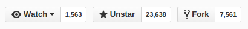

Open Graphics Library is a cross-language, cross-platform application programming interface (API) for rendering 2D and 3D vector graphics. The API is typically used to interact with a graphics processing unit (GPU), to achieve hardware-accelerated rendering.
Browser version of OpenGL. Allows to use GPU accelerated 3D rendering, currently supported by all modern browsers.
Most popular WebGL wrapper
You don't have to touch native WebGL code!
Lots of ready to use helpers, like OrbitCamera, and reference examples. Easy to learn, as each THREE.js example source code is easily available (just look at source of a site).
var scene = new THREE.Scene();
var camera = new THREE.PerspectiveCamera(
60, window.innerWidth / window.innerHeight, 0.1, 1000 );
var renderer = new THREE.WebGLRenderer();
renderer.setClearColor( 0xffffff );
renderer.setSize( window.innerWidth, window.innerHeight );
document.body.appendChild( renderer.domElement );
var geometry = new THREE.BoxGeometry( 2.5, 2.5, 2.5 );
var material = new THREE.MeshBasicMaterial({
color: 0xff0000,
wireframe: true
});
var cube = new THREE.Mesh( geometry, material );
scene.add( cube );
// we have to move camera to actually see a cube
camera.position.z = 5;
function render() {
cube.rotation.x += 0.03;
cube.rotation.y += 0.03;
requestAnimationFrame( render );
renderer.render( scene, camera );
}
render();
// add fog
scene.fog = new THREE.FogExp2( 0xcccccc, 0.002 );
// and set clear color
renderer.setClearColor( scene.fog.color );
// add and initialize OrbitControls.js
var controls = new THREE.OrbitControls(
camera, renderer.domElement );
controls.enableDamping = true;
controls.dampingFactor = 0.2;
// inside render()
controls.update();
var geometry = new THREE.CylinderGeometry( 0, 10, 30, 16, 1 );
var material = new THREE.MeshPhongMaterial( { color:0x77ff77 } );
for ( var i = 0; i < 500; i ++ ) {
var mesh = new THREE.Mesh( geometry, material );
mesh.position.x = ( Math.random() - 0.5 ) * 1000;
mesh.position.y = ( Math.random() - 0.5 ) * 1000;
mesh.position.z = ( Math.random() - 0.5 ) * 1000;
scene.add( mesh );
}
var light = new THREE.DirectionalLight( 0xffffff );
light.position.set( 1, 1, 1 );
scene.add( light );
light = new THREE.DirectionalLight( 0x002288 );
light.position.set( -1, -1, -1 );
scene.add( light );
light = new THREE.AmbientLight( 0x222222 );
scene.add( light );
var x = 0, y = 0, heartShape = new THREE.Shape();
heartShape.moveTo( x + 25, y + 25 );
heartShape.bezierCurveTo( x + 25, y + 25, x + 20, y, x, y );
heartShape.bezierCurveTo( x - 30, y, x - 30, y + 35,x - 30,y + 35 );
heartShape.bezierCurveTo( x - 30, y + 55, x - 10, y + 77, x + 25, y + 95 );
heartShape.bezierCurveTo( x + 60, y + 77, x + 80, y + 55, x + 80, y + 35 );
heartShape.bezierCurveTo( x + 80, y + 35, x + 80, y, x + 50, y );
heartShape.bezierCurveTo( x + 35, y, x + 25, y + 25, x + 25, y + 25 );
var extrudeSettings = {
amount: 8, bevelEnabled: true, bevelSegments: 2,
steps: 2, bevelSize: 1, bevelThickness: 1
};
var geometry = new THREE.ExtrudeGeometry(
heartShape, extrudeSettings );
var material = new THREE.ShaderMaterial( {
uniforms: {
time: { type: "f", value: 1.0 },
resolution: { type: "v2", value: new THREE.Vector2() }
},
attributes: {
vertexOpacity: { type: 'f', value: [] }
},
vertexShader: document.getElementById( 'vs' ).textContent,
fragmentShader: document.getElementById( 'fs' ).textContent
} );
var texture = new THREE.Texture();
var loader = new THREE.ImageLoader();
loader.load( 'path/to/texture.jpg', function ( image ) {
texture.image = image;
texture.needsUpdate = true;
} );
// usage
material.map = texture;
var loader = new THREE.OBJLoader();
loader.load( 'path/to/obj', function ( object ) {
scene.add( object );
}, onProgress, onError );
Polyglot programmer